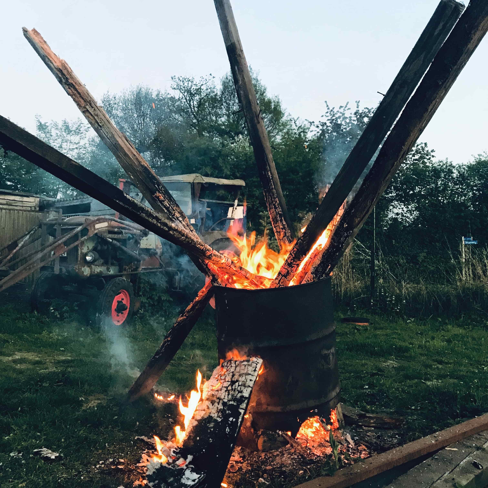
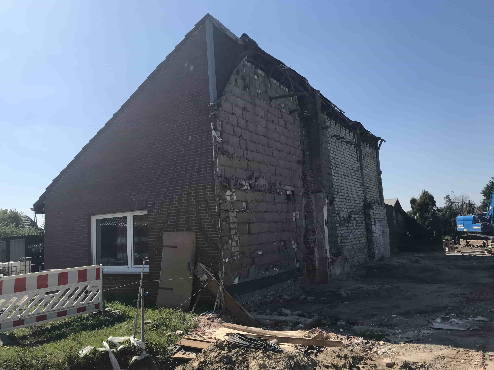

**Hej læser. Som du nok har lagt mærke til, kom der ikke noget ud på bloggen sidste søndag; vores internet var nede, og Telekom-manden som skulle fikse det,
blev ved med at udskyde det. Så i dag(mandag d. 29 april) har jeg overlevet 11 dage uden internet. Ja, jeg ved det; det lyder umuligt, men man KAN altså godt overleve uden internet. Men i hvertfald, jeg har besluttet mig for bare at skrive det hele ind som et indslag:**
Siden det blev lidt langt i følge min mening, har jeg skrevet et meget kort resume om hvad der er sket.
>>TL;DR<<
Uge 1: Det var ekstremt varmt og min cykel blev stjålet da vi spillede hockey i Walbeck, fordi jeg ikke havde låst den. Nu skal jeg købe en ny brugt cykel. I onsdags var jeg henne ved Felix i Issum. Vi havde påskebål i søndags for at fejre sommeren der er på vej.
Uge 2: Den ene side af huset blev revet ned sammen med vores internet og telefon ledninger. Vores husvæg er også blevet dels ødelagt. Derfor er der mega meget stress over hvad der nu skal ske.
Min tur til Köln i fredags blev aflyst pga. sygdom. Jeg var i stedet til overnatning hos Felix torsdag til søndag. Vi spillede Monopoly til kl. 05 om morgenen.
Så spillede jeg en masse mundharmonika og er begyndt at prøve at lære at jungelere og påskeferien er forbi.
Uge 1
Nu er sommeren på vej! I denne uge har vi ikke haft mindre end 20 grader om dagen, og vi var enda oppe og runde 26*c i lørdags.
Men ugen har ikke været helt så god som vejret. Fordi i tirsdags var jeg i Walbeck og spille hockey med Hendrik, hans lillebror og
to andre drenge fra Walbeck. Der var jeg i 4 timer. Jeg kørte hen og parkede cyklen på parkeringspladsen og så spillede vi. Da vi var
færdige og vi ville køre hjem, havde nogen stjålet min cykel.. Den stod 15-20 meter fra hvor vi spillede, og ingen af os så at
den forsvandt. Jeg havde enda kigget en halv time før vi kørte, og der stod den der stadig. Men det var ret meget min egen skyld,
fordi der var meget jeg kunne have gjort anderledes for at den ikke var blevet taget. f.eks: låst den..(Det var varmt; havde ikke min jakke
med hvor nøglen ligger i(ja, dumt).) eller bare stillet den derhen hvor vi spillede, så de ikke kunne tage den.
Ja, det ved jeg ikke. Det var lidt dumt, men hvad kan jeg gøre nu. Jeg var faktisk i
torsdags ude og gå, hvor jeg lige gik forbi og ringede på naboerne som bor rundt omkring hvor den stod, og de mente alle at have set en
grøn gammel cykel. Men de så den i onsdags, ikke i tirsdags(hvor jeg var der).
Men så fik jeg også at vide af en mand, at han flere gange havde
været nødt til at ringe til politiet, fordi det er åbenbart noget der sker ofte. Jeg var bare en af mange. En mand mente også at det var de
polske arbejdere i lejligheden lige ved siden af, og at de plejer at hugge dem, tage det der er noget værd, og smide resten til skråt.
Snakkede også med en af de polske arbejdere(han kunne tysk) og han virkede også liiiidt mistænkelig.
Han ville nemlig ikke give nogen rigtig forklaring. Først spurgte jeg om han havde set en grøn cykel >>Ja<< "Ja, fordi jeg har nemlig
mistet "min" grøne cykel." >>Nej, har jeg ik set<<.. Hmmm.
Så fandt jeg en mand som så tilbød mig en
af hans gamle cykler helt gratis.. Den kunne jeg bare tage med hjem lige på stedet.. Det virkede også lidt mistænkeligt.. Fordi hvad nu hvis
de også bare var nogle cykler som han havde stjålet.. Så jeg endte med at gå hjem tomhændet og ville snakke med Anita om det først. Vi
kom så til den konklusion at vi ville prøve at finde en brugt cykel af samme model på Ebay.
I onsdags var jeg i Issum hvor Felix bor; egentlig skulle vi have været i Xanten for at spille minigolf, men det kunne vi desværre
ikke, så i stedet tog vi over til ham og så lidt af byen. Det var meget spændende. Ud over det har jeg ikke lavet noget hele ugen.
Udover at læse; der var jo 24 grader i skyggen, så jeg sad meget udenfor og nød vejret.
 Påskesøndag lavede vi påskebål; det
er praktisk set det samme som et SanktHans-bål, bare uden heks og så fejrer man at vinteren er ovre og sommeren er på vej.(Det var det jeg mente i starten med "Nu er sommeren på vej!")
Uge 2
Denne uge har været ret stressende; Naboen inde ved siden af belsuttede lige nemlig for at rive sin del af huset ned og bygge nyt.(For dem der ikke husker det, så bor vi i hus sammen med en anden familie, fordi da dette hus blev bygget(af to brødre) kom de op og skændes og delte huset i to på det lange led, hvor den ene bror, solgte sin del, og så har det bare været to dele lige siden.) Begge dele af huset er flere gange blevet revet ned og bygget op igen, så intet nyt i det.
Bare det, at denne gang valgte arbejderne at grave 20 cm. ind i vores mur; hvilket blottede skrøblige dele af huset til vejr og vind. Da de fandt ud af hvad der var sket, pakkede de sammen og gik på påskeferie.. -_- Hov, liiige en ekstra ting som jeg hvis lige glemte at nævne: inden de fik pakket sammen, nåede de lige at hakke vores internet/telefon-ledning over og efterlod os uden internet + telefon i påsken. Og derfor kommer opslaget først op nu. Men nok om det; ved at bore 20 cm. ind i væggen, har de gjort stor skade og enda op til flere revner i væggen som kan ses indefra. Der var også et stort hul oppe i toppen af huset hvor tagene sad sammen, som ikke var vand/vind-tætte. Det fik vi så dog fikset. Der var også hul direkte in til Edeltrauts værelse, så der blæste altså i 5 dage kold vind ind på hendes værelse, og ingen kunne/gad gøre noget ved det. Men nu må vi lige se hvad der sker i de kommende par uger.
Vores tur til Köln blevet desværre aflyst udskydet(til den 18. maj), fordi min Koordinatorin blev syg. Men det var en god ting; for mig, ikke hende..
Fordi jeg var nemlig blevet inviteret til en overnating ved Felix. Det var torsdag til fredag, så det havde jeg sagt nej til, men der kom jeg så tilbage på listen og tog derover i stedet. Vi var 6 fra skolen, og lavede ikke rigtigt anden end at spille dumme spil, spise pizza, MEGET slik og Monopoly til kl. 5 om morgenen.
Eftersom at vi de seneste par uger ikke har haft internet, har jeg tilpasset mig(som mennesker nu engang kan) og fået læst en masse bøger og prøvet at lære nye "skills" som at blive bedre til at spille mundharmonika og jungelere med TRE bolde!
Ja.. Det har været noget af en uge, men nu er påskeferien ovre og skolen er begyndt igen. Og så må vi se hvad der sker med huset og vores væg. Jeg går ud fra at naboen er nødt til at betale for alle de skader der er opstået, men det må vi lige til.
8. april - 14. april.
Hallo meine Damen und Herren.. Nu har jeg "endelig" fået påskeferie og er blevet færdig med Q1.
Der er ikke meget at sige for at være ærlig. Altså, jeg har ferie i de næste 14 dage til mandag den 29. I de kommende uger har jeg ikke meget planlagt, udover en tur med Köln med en anden udvekslingsstudent og min Koordinatorin på næste fredag. Der bliver heller ikke varmt før på torsdag, men så skal jeg helt klart ud og spille noget hockey med dem fra Walbeck.
Ellers så skete der ikke noget i sidste uge..
Har nu siddet her i en halv time og ved ikke rigtigt hvad jeg skal skrive.. Jeg er helt flad for idéer. Ja, pas. Jeg skriver det ned når jeg husker noget, og så kommer det op om en uge, eller så ændrer jeg det senere. Ses, og go' påske / Ostern.
1. april - 7. april.
HEJ!
I mandags havde jeg min første dag på Q1, og det var faktisk ikke så slemt. Altså, jo jeg forstod ikke særlig meget i undervisningen, ellers var det ikke så anderledes fra EF. Jeg fik en "guide"(en dreng ved navn Moni(som i Monty python)) som skulle hjælpe mig rundt for at jeg ikke fare helt vild i det med nye klasser og tider og alt muligt.
Jeg fandt så ud af at Monti og nogle af hans venner gik til bordtennis i Gelden ved en skole ved navn "Anne-Frank" Så der tænkte jeg at det var hvis på tide at jeg fik begyndt med noget sport, så jeg spurte om jeg kunne komme med og prøve det, og derfor var jeg med inde og spille i fredags; trods Monti der var syg og ikke kunne spille. Så jeg spillede derfor med nogle af hans venner som også var på min alder(c.a) fordi ellers var der kun børn tilstede. Men i hvert fald: jeg kunne(ifølge trænerne) bare komme tirsdag og fredag når jeg havde lyst, og ingen betaling var påkrævet fordi spilsæsonnen allerede var ovre. Så nu er jeg endelig begyndt til en sport..
Nu vil jeg gerne fortælle om hvordan jeg løb et halvmarathon ved et uheld. I lørdags Pavar det godt vejr; så jeg havde selvfølgelig lige lyst til en lille løbe/gå-tur. Jeg tænkte først at jeg lige ville løbe til Geldern og så tilbage igen. Men så var det sådan at dem fra Walbeck gerne ville spille hockey den dag, så jeg tænkte at jeg ville gå/løbe lidt længere, og tage en lille omvej, hvor jeg så kom til Walbeck. Da Jeg så var kommet til Lüllingen(en lille by hvor jeg skulle gå/løbe til venstre for at komme til Walbeck) blev jeg tørstig, så jeg så på Google Maps at der 3 km længere mod nord var en by ved navn Twisteden hvor der lå en Edeka(supermarked) Så gik/løb jeg derop hvor jeg så fandt ud af...... at DEN VAR LUKKET!! Og det var ikke engang en rigtig Edeka. Det var sådan en lille nærkøb butik som.. Ja. Så måtte jeg gå tilbage... 8km hen af små skovveje som snoede sig ved 100m. Men det var nu sjovt nok, fordi nærmest hele vejen var igennem en skov, så der fik jeg natur at se, og stilhed at føle. Det var ret rart. Og tænk engang, mens jeg gik igennem skoven, mødte jeg en ældre par som også var ude og gå. De spurgte så om jeg var faret vild, fordi jeg kiggede på Google Maps, og der kom jeg så til at sige "ja" fordi jeg havde misforstået spørgsmålet. Men efter jeg sagde at jeg var en udvekslingsstudent fra Danmark forstod de, og så begyndte vi at chit-chatte lidt mens vi gik igennem skoven sammen. Manden insisterede på at vi ABSOLUT skulle snakke engelsk i starten, jeg tror det var fordi han var ret stolt af det.(Det var også ret utroligt at en sådan 60-70 årig gammel tysker kunne så flot engelsk, trods hvad de "normalt" kan.) Men det var så indtil konen nævnte at de "egentlig" burde snakke tysk med mig så jeg lærte det. Så kom vi til en bænk hvor de havde brug for et lille hvil, og der snakkede vi så videre om alt muligt i næsten en halv time. Efter manden så havde hjulpet mig med hvilken retning jeg skulle gå, splittede vi og så aldrig hindanden igen. Færdig. Slut.
NEJ! Nå, men så kom jeg til Walbeck og de spillede stadig, men undrede sig over hvorfor jeg først så sent. Der fik de så hele historien. Jeg prøvede så at spille lidt med, men det kunne jeg overhovedet ikke, fordi mine benmuskler var helt ødelagte, og måske det faktum at jeg ikke havde fået nået at drikke eller at spise i 7 timer. Så var Hendriks mor også lige så rar at køre mig hjem bagefter, så jeg ikke skulle gå. Så kom jeg hjem og vi fik burgers. *glad-smiley*
Og det var historien fra da jeg gik/løb 22 km, a.k.a. et halvmarathon i lørdags.
Og i søndags var vi på kinesisk mur aktiv buffet noget-restaurent. Det var fordi Edeltraut havde fødselsdag i torsdags, så Anita inviterede på middag. Det smagte mega godt... Ja.